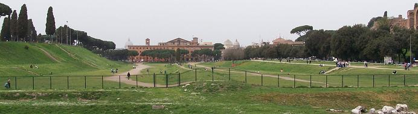
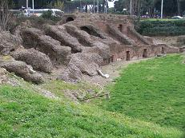
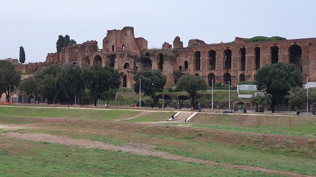
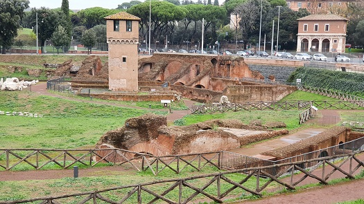
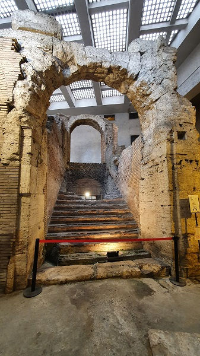
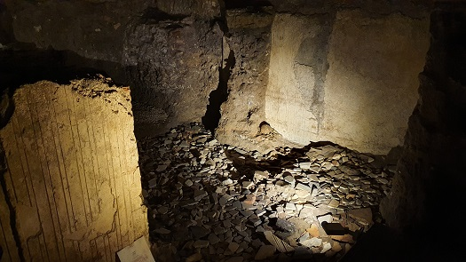
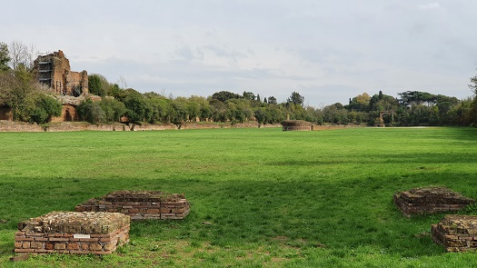
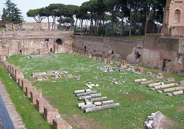
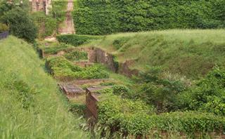

|
Circo Máximo

Estaba
situado en las laderas de las colinas del Palatino y Aventino. En él se
desarrollaban las famosas carreras de bigas y cuadrigas como en la
película Ben-Hur.
|

|
Dicen que
podía albergar unos 250.000.- espectadores. La tradición atribuye su
primera construcción en tiempos de Tarquinio Prisco. La grada de madera,
posteriormente se construyó de mampostería. En el 309 a.e.c en el lado
norte se construyeron las carceres. En el siglo II a.e.c su mampostería
fue reforzada. En época imperial bajo mandato de Julio Cesar fue
modificado y ampliado. También lo reformaron, Augusto, Nerón, Trajano,
Domiciano, Constantino. Media 600x200m. El graderío tenía una altura de
35m. El emperador Domiciano construyó un palco en el Palatino de cara al
Circo para poder ver cómodamente las carreras.
Verde, blanco, rojo y azul eran los cuatro colores de los equipos
participantes. La salida estaba en el extremo cercano al río.
|
 |
Se conserva muy poco
del Circo, la pista de carreras, hoy cubierta de hierba, la spina y algunas de las carceres de
salida.
La carrera constaba de
siete vueltas que marcaban con delfines donados por Agripa.
Totila, rey de los Godos,
fue el último que ofreció a los romanos unas carreras en el circo en el
549.
En el siglo XVI se excavó para extraer sus obeliscos, que aparecieron a 7m
de profundidad y sus bloques fueron reutilizados en la construcción de la
Basílica de San Pedro. En el siglo XIX acogió las oficinas de la compañía del
gas. En 1930 se excavó y limpio toda el área y se dejo como lo vemos hoy
en día. Se sabe que el Circo se conserva integro bajo tierra, pero su
excavación se ve dificultada por soterramiento del arroyo del Aqua
Mariana. El Circo Máximo fue el primero y mayor Circo del mundo.
|
 |
 |
Estadio de
Domiciano
Construido en el Campo
de Marte por el emperador Domiciano.
|
 |

El Estadio de Domiciano no
poseía spina ni carceres. Era un estadio para competiciones
atléticas de estilo griego, los juegos avonales. Data de finales del
siglo I. Tenía una capacidad para unos 30.000 espectadores.
La Plaza Navona ocupa el emplazamiento del estadio y ha conservado
sus dimensiones y su forma. |
Circo de Majencio
El Circo de Majencio (306-312) fue construido cerca de la vía Apia. Media
unos 513 metros de largo y 90 metros de ancho con una capacidad de unos
10000 espectadores. La spina fue decorada con estatuas, se conservan
parte de las carceres y los restos de dos torres que, en los extremos, que
flanqueaban los palcos de los magistrados encargados de dar la señal de
partida.

El Circo de Nerón
Estaba ubicado en la Colina Vaticana, que entonces se hallaba fuera de los
muros de la ciudad.
La construcción fue comenzada por Calígula, ubicándola dentro de una villa
de su madre, Agripina la Mayor. Cuando esta murió, Nerón heredó la
propiedad y lo finalizó. El Circo de Nerón era privado y en algunas
ocasiones se abría al público.
Circo Palatino
Circo de
uso imperial. Fue construido por Domiciano.

Circo Variano
Su construcción la inicio Septimio Severo y la finalizó Heliogábalo. Se
localiza junto a Basílica de Santa Croce en Gerusalemme, en vía Alcamo se
localiza la curva oriental. También se utilizó en la construcción del
Acqua Felice. Media 565x125m. En la spina se colocó el Obelisco del
Pinciano.

|